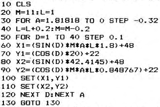

Micropower |
Volume 2 · Number 3 · July 1982 |
| Page 36 of 37 |
|---|
This program was sent to us by a Mr Carl Whalley of Blackburn and plots a very pretty picture.

If you alter the function in the SIN and COS evaluation you can get some very interesting effects.
If anyone else has any of these nice little programs rolling around at home, we would appreciate your sending them in so that we can print them out and hang them on the stark office walls that we have here at Micropower
If you try to use Nasprint with the RAM version of ZEAP, you will find at keeps giving the message “uninitiated”. This is because it tests memory location 0C79 to check that “DC” has been put there by ZEAP. However, the RAM version puts “1D” there instead when cold started. Also, after checking that ZEAP is started, Nasprint attempts to return control by jumping to D003. The call for RAM ZEAP is 1003. Therefore, to make Nasprint work properly with RAM ZEAP we must change the locations B16F and B17D in Nasprint to 1D and 10 respectively. This can be done using the Modify command if Nasprint is in RAM but an EPROM programmer is required if you have an EPROM version.
Steve Stubbs, Inverurie
FOR SALE –
RAM A
card (4Mhz) with 32K RAM. In full working order
with no wait states.£70 o.n.0.
Telephone Brian Oliver – Erith (Kent) _____
FOR SALE – NASPEN (Nas-sys version) in two 2708
EPROMS: Bits &
PCs Toolkit also in two 2708 EPROMs: and finally Nas-sys
Monitor ROM. All with their original instructions sheets. Real
bargains at £11 per item. (Selling to help finance CP/M on
disks).
Ring Steve Stubbs on Kemnay ____ (STD code _____)
FOR SALE
RAM A
card with 32K RAM, Runs at 4Mhz with no waits.£60
Also RAM A card with 16K RAM. 4Mhz and no waits.£50
Also Castle Interface with original documentation.£8
Ring Ian on Leeds (____) ______
| Page 36 of 37 |
|---|